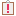

| CONSTELLATION Action | User Action | Menu Icon |
|---|---|---|
| Open Plugin Reporter |
Views -> Plugin Reporter Keyboard Shortcut: Ctrl + Shift + P |
 |
The Plugin Reporter stores a history of any plugin run on the graph currently in focus.
A plugin report will be created whenever a plugin is run, and added to the Plugin Reporter. These reports will change their color and message based on the current status of the plugin they represent.
The Plugin Reporter allows filtering of the plugin history using a tag-based system. You can filter on plugin reports using by their tags using the 'Filter' drop down menu.
The 'Clear' button will clear all currently displayed plugin reports, and only display new plugin reports for the active graph.
The 'Show All' button will make the Plugin Reporter display all plugin reports for the active graph.
The 'Help' button will open this help documentation.